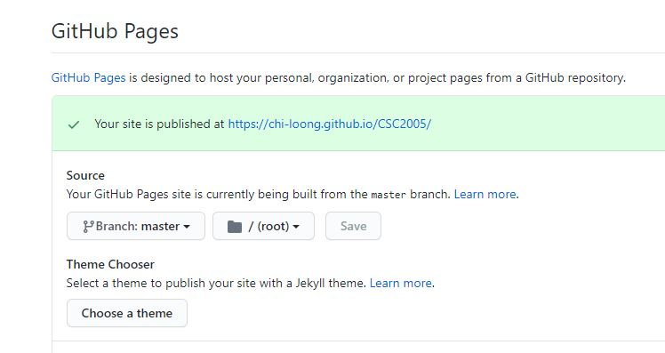

3a: Task abstraction
Why do data viz?
Why: An overview

Why task abstraction?
Thinking about why in an abstract form, rather than the domain specific way users often talk about data viz.
This will allow us a framework to discuss use cases, which may on surface look different.
Actions / Targets
This proposed taxonomy is from Munzner's framework (Visualization Analysis and Design, chapter 3)
Actions in this case is a verb, and targets are nouns.
Reading: A multi-level typology of abstract visualization tasks, Bremmer, Munzner
Reading: Taxonomy of interactive dynamics for visual analysis, Schneiderman, Heer
Viz designer or user?
Are you consuming the visualization or producing it?
Viz tools fall somewhere along a continuum from specific to general.
On the general side, tools are flexible and allow users many choices what to make.
On the specific side, the tool is curated and choices are limited in how an end user can interact with the data set.
Exploratory vs Explainatory

Storytelling with data, chapter 1, Nussbaumer
3-levels of actions

Visualization Analysis and Design, chapter 3, Munzner
Targets

Visualization Analysis and Design, chapter 3, Munzner
How: An overview

Git
GitHub Desktop: Git GUI
The easiest is probably GitHub Desktop.
Document for GitHub Desktop is excellent, and you can find it here.
The Git functions that you need to know are probably just clone, fork, pull, push and commit.
GitHub desktop makes this easy as it already has a UX walkthrough designed to guide you in the setup (with Git).
I'll do a quick walkthrough on how to setup a repo from scratch and commit a change.
Git GUI: Alternatives
I also like Sourcetree, which is another free Git GUI client.
It has some useful functions, notably a graph view of the repo changes.

There are other Git GUIs like TortoiseGit, etc. What client or even command line is up to you. But no excuse in not knowing how to work with Git repos.
GitPages
Under the settings tab in your repo, turn on GitHub Pages.
You need to have an index.html file in your main repo page.
Read up on the docs.
Assignment 1b
Carpark utilization viz ideas
Workshop discussion: Viz design
Recall the carpark data set for the 1st assignment.
Based on carpark API data, how would you visualize it beyond a tabular form?
Any other datasets that you might need?
What are the data scales (levels of measurement) - nominal, ordinal, quantitative - for the data you are visualizing?
Workshop discussion: Designing a visualization
Think about this and come up with some ideas to present for next week's Thursday workshop.
You do not have to come up with a visualization at this point. Description is enough, or a maybe simple hand-drawn mocks for communication will do.
Idea is to think about what the data is like for your proposed viz.
Assume a use case - exploring the dataset, presentation, etc.
Assume you can mash-up with other datasets, as necessary.
You can use derived attributes instead of what was given. E.g. Utilization in the technical challenge above is a derived attribute.
Questions?
Chi-Loong | V/R